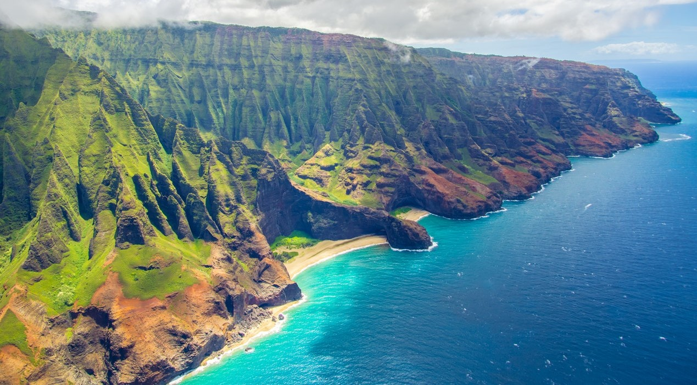
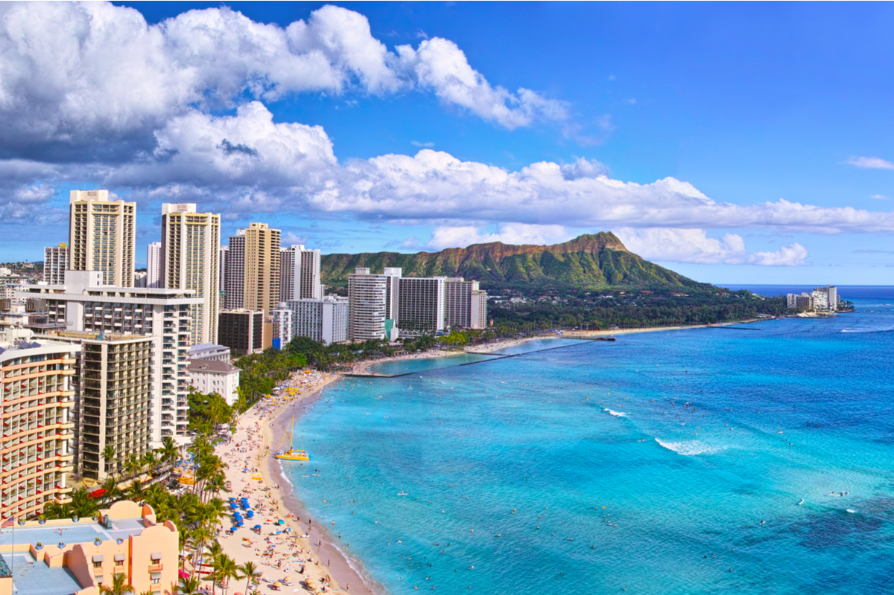

Ten egzotyczny archipelag wchodzący w skład USA położony jest na środku Pacyfiku. Dla wielu jest on uosobieniem miejsca rajskiego, dostępnego wyłącznie dla zamożnych. W tej chwili podróż na Hawaje jest osiągalna niemal dla każdego turysty. Dzięki zniesieniu wiz, archipelag jest jeszcze bliższy naszym rodakom. Wyspy mają do zaoferowania moc atrakcji nawet dla najbardziej wybrednego podróżnika.Hawaje to najmłodszy stan USA (dołączony do Stanów w 1959 roku), którego stolicą jest Honolulu, znajdujące się na wyspie O’ahu (i nie jest to największa wyspa Hawajów). Hawaje zamieszkuje 1,3 mln ludzi (uwzględniając turystów i amerykańskich żołnierzy, którzy tam stacjonują), z czego prawie 1 milion mieszka na wyspie O’ahu! Polinezyjczycy, czyli rdzenni Hawajczycy liczą ponad 66 tysięcy osób, a największą grupą mieszkańców Hawajów są imigranci z Azji.Bo Hawaje to także język hawajski, który przez około cztery dekady dwudziestego wieku został zakazany w szkołach, a dzieci karano za mówienie po hawajsku. Dopiero w latach 60-tych 20. wieku na nowo zaczęła pojawiać się hawajska kultura wraz z językiem i od tej pory Hawajczycy dbają o jej zachowanie.

